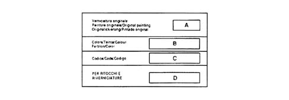

Bodywork paint identification plate
- Path
- Technical Data > General information > IDENTIFICATION PLATES > Bodywork paint identification plate
- Kind
- technical data / specifications
- Applies to
- all engines; all production periods
- Interactive page
- https://sloeber94.github.io/elrnDB-a156/en/#/3233242
Applies to: all engines; all production periods
On Saloon versions the plate is fitted inside the boot lid, whilst on Sport Wagon versions it is fitted to the right inner edge of the tailgate.
The plate contains the following data.
A. Paint manufacturer
B. Colour name
C. Colour code
D. Colour code for touching-up or repainting
